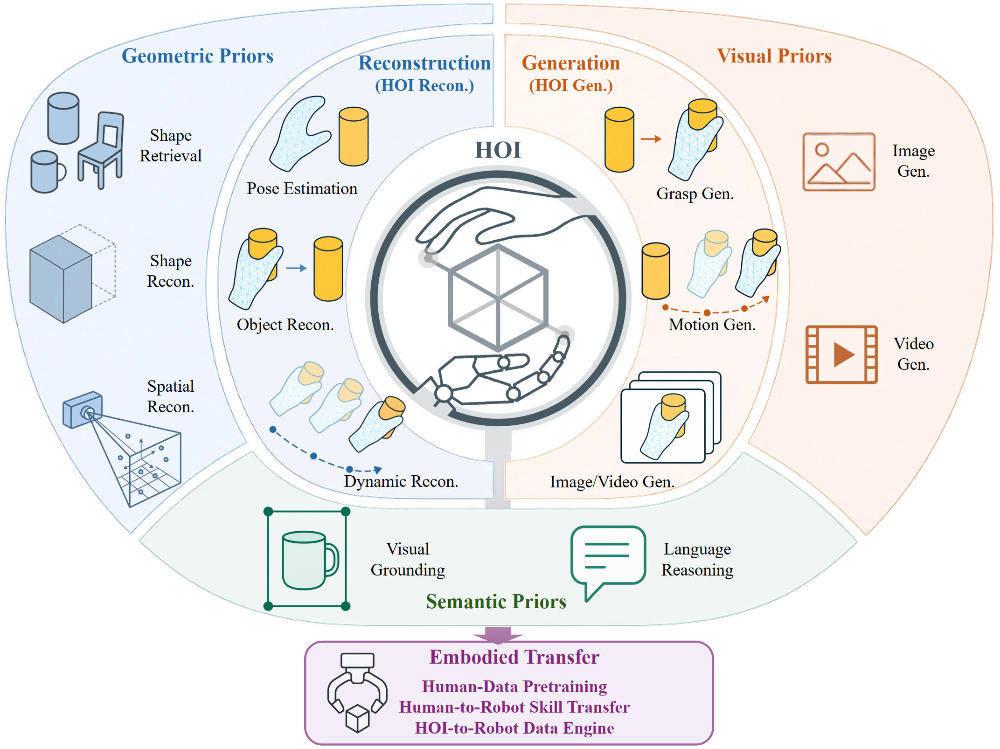
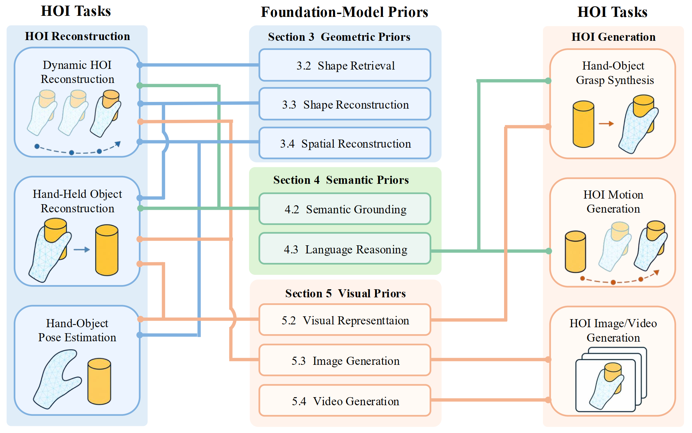
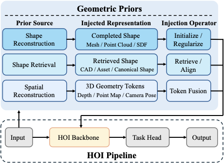
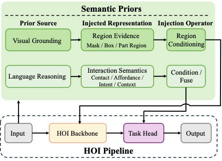
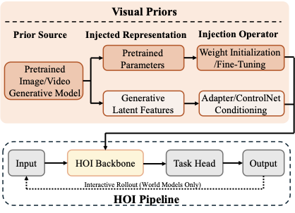
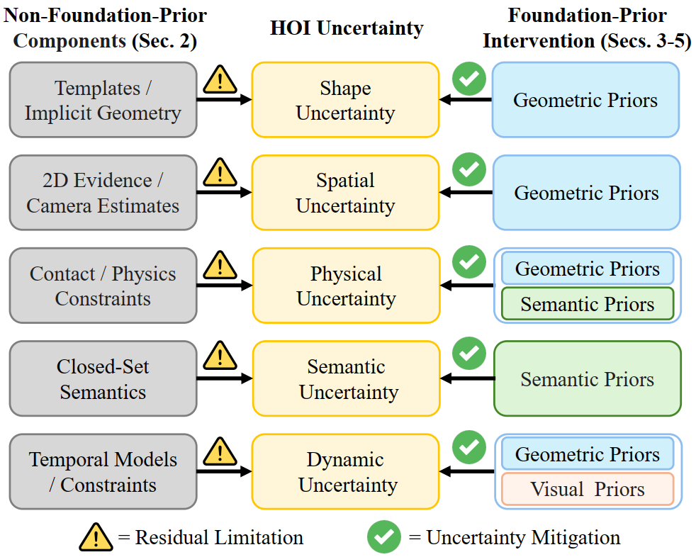
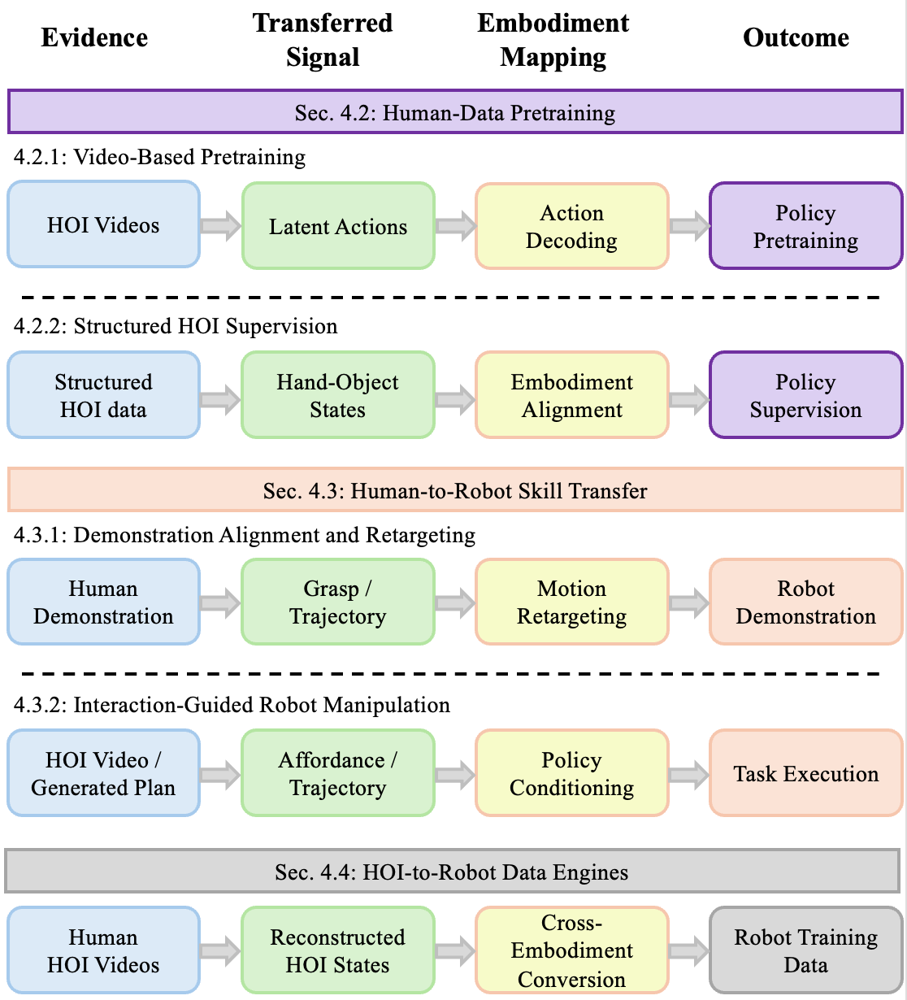

Survey · Hand-Object Interaction · Embodied Intelligence
Hand-object interaction (HOI) modeling remains challenging because it requires joint reasoning about hand articulation, object geometry, contact, semantics, and dynamics under severe visual uncertainty. Foundation models introduce transferable prior knowledge learned from large-scale cross-domain data, offering new ways to address these challenges beyond task-specific data and models. However, the rapidly growing literature remains fragmented, and existing studies typically describe these methods simply as “using large models” without systematically characterizing what knowledge is introduced, where it enters the HOI pipeline, or which HOI uncertainty it helps reduce. This survey presents the first systematic review of foundation-model priors for HOI. We organize the literature into six HOI tasks spanning reconstruction and generation. More importantly, we establish a taxonomy of eight foundation-model sub-priors grouped into geometric, semantic, and visual families. Geometric priors encompass shape retrieval, shape reconstruction, and spatial reconstruction; semantic priors include semantic grounding and language reasoning; and visual priors cover visual representation, image generation, and video generation. Based on this taxonomy, we systematically analyze how different priors are represented, injected, and adapted across HOI pipelines and tasks. Beyond how foundation models empower HOI, we further examine how HOI-derived knowledge is used in robot learning, including human-data pretraining, human-to-robot skill transfer, and HOI-to-robot data generation. Finally, we summarize datasets and evaluation protocols, and discuss limitations and future directions toward more generalizable HOI systems. To support long-term progress, we curate a live repository that continuously aggregates emerging methods and benchmarks.

The first unified framework that organizes HOI methods by the type of foundation-model prior they inject, covering eight sub-priors under geometric, semantic, and visual families rather than by task or architecture alone, and revealing what cross-domain knowledge is introduced and which uncertainty it reduces.
A systematic decomposition of how priors enter the HOI pipeline through asset retrieval, shape initialization and regularization, scale alignment and registration, token fusion, region conditioning, interaction-semantic conditioning, adapter/ControlNet conditioning, and score-guided regularization, while tracing the source, injected representation, and residual limitation of each.
A bridge from visual HOI analysis to embodied intelligence, organizing how human hand-object evidence flows into robot learning through human-data pretraining, human-to-robot skill transfer, and HOI-to-robot data engines.
The roadmap below maps the eight foundation-model sub-priors across three families to the six HOI reconstruction and generation tasks reviewed in each subsection. It serves as a navigational guide: for any task, it indicates which prior family and sub-prior sections to consult, and for any prior, it shows which tasks it supports.

We organize foundation-model knowledge into three families—geometric, semantic, and visual—with eight sub-priors that each address a distinct class of HOI uncertainty. These priors do not redefine the HOI task; they inject cross-domain knowledge at different stages of a shared hand-object pipeline.
Reduce shape and spatial uncertainty via asset retrieval from 3D libraries, single-image-to-3D generation for occluded geometry, and monocular spatial reconstruction (depth, point maps, camera alignment).

Localize functional regions and infer interaction intent through open-vocabulary grounding and language reasoning, distinguishing visually similar but functionally different manipulations.

Transfer reusable visual features and model distributions over appearance, temporal coherence, and interaction dynamics via general-purpose visual encoders and pretrained image/video generators, extending toward action-conditioned HOI world models.


Beyond reconstruction and generation, we examine how HOI-derived knowledge transfers to robot learning along three directions: human-data pretraining, human-to-robot skill transfer, and HOI-to-robot data engines. These directions further specialize into five concrete transfer routes for supervision, target-skill guidance, and reusable robot training data.

No single prior family suffices. A modular system around a shared hand-object state, contact, and trajectory interface, where priors are composed by dominant uncertainty and validated through contact/physics or robot execution.
Current benchmarks are dominated by geometric metrics. Future evaluation should integrate contact agreement, functional success, physical plausibility, and object-state transition fidelity under a common protocol.
Jointly recovering camera ego-motion, long-horizon hand-object state, and contact in a unified world frame across grasp, manipulation, release, and re-grasp phases remains open.
Estimate prior confidence, route priors by occlusion, visibility, camera motion, and intent, and expose conflicts rather than silently averaging incompatible signals.
Store HOI-derived variables in a queryable dynamic memory that persists across occluded manipulation phases and reconciles pre-grasp estimates with subsequent interaction evidence.
Infer richer, robot-usable descriptions of human HOI, including object/part identity, interaction phase, contact, intent, and intended object-state change, beyond raw trajectory transfer.
@misc{lin2026handobjectinteractionagelarge,
title={Hand-Object Interaction in the Age of Large Foundation Models:Reconstruction, Generation, and Embodied Transfer},
author={Weiquan Lin and Yu Deng and Shiyang Liu and Luping Xiao and Xu Tang and Junzhi Yu and Jiaolong Yang and Lei Zhang and Xingyu Chen},
year={2026},
eprint={2607.28394},
archivePrefix={arXiv},
primaryClass={cs.CV},
url={https://arxiv.org/abs/2607.28394},
}